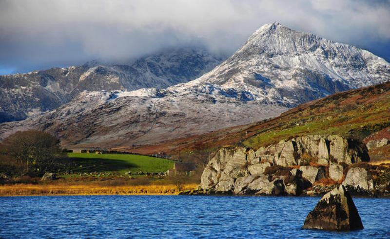

Великобританія - найкрасивіше та улюблене місце для туристів з усього світу. Особливо сильно країна приваблює європейців завдяки спільній мові та історичній спадщині.
Тут дуже багато привабливих пам'яток, таких як: найвідоміші музеї, найкрасивіші округи, неймовірні театри,величезна кількість історичних міст та місць, які варто відвідати.
Великобританія огорнута міфами та легендами. Їй немає рівних у таємничості та загадковості.
Говорячи про Велику Британію, багато хто відразу згадує Англію, але Сполучене Королівство — це ще й Шотландія, і Уельс з Ірландією.
І кожен із цих регіонів припасував безліч цікавостей для своїх гостей. То чим же зайнятися туристу в гостях у чинних британців?
Лондон
Якою б шаблонною не здавалася така порада, але Лондон варто відвідати неодмінно, адже англійська столиця увібрала в себе все, що тільки можна запропонувати мандрівникові.
Музеї, галереї, паби та бари, парки та палаци — тут життя англійців постане перед вами з різних ракурсів.
Лондонський Тауер, Британський музей, Букінгемський палац, Собор Святого Павла, будівля парламенту та Біг Бен, музей Вікторії та Альберта, Тейт, Хемптон-Корт та Вестмінстерське абатство.
Лондон – це сукупність сліпуче красивої архітектури, культури, історії та мистецтва.
Прокотіться на колесі огляду London Eye і помилуйтеся видом на Лондон, загляньте в пару-трійку іменитих столичних музеїв на кшталт Музею Вікторії та Альберта,
Британського музею або галереї Тейт, щоб провести годинку-другу в компанії світових шедеврів мистецтва.
Единбург
Единбург – столиця Шотландії, яка по праву вважається одним із найелегантніших міст Європи. Обов'язково відвідайте Единбурзький замок, палац Холіруд і Королівську Мілю.
Саме тут ви зможете насолодитися чудовою кам'яною архітектурою та екстравагантністю Единбурга.
Будівництво вежі святого Стефана було завершено у 1858 році, а у вересні 1859 року було запущено годинниковий механізм, який досі веде відлік часу.
Годинникова вежа має цікаві архітектурні та символічні деталі, наприклад, на всіх чотирьох циферблатах, крім часу, що вказують і на сторони світла, висічено напис
«Боже, бережи королеву Вікторію!», а на самій вежі поруч із годинником напис «Хвала Господу». Для обох написів використовується латина.
Стоунхедж
Стоунхедж – дивовижна архітектурна та археологічна пам'ятка. Навіть якщо назва комусь і не знайома, то швидше за все ви бачили її десь на картинці чи фотографії.
Стоунхедж є складною конструкцією, до якої входять арки, кожна з яких точно вказувала одну з чотирьох сторін світла, два кільця з величезних каменів
і вівтарний камінь включені в конструкцію. Важко уявити, скільки зусиль було витрачено для будівництва Стоунхеджа.
Стоунхедж варто відвідати не тільки, щоб побачити дивовижну археологічну пам'ятку, а й щоб відчути ту неймовірну енергетику, яку він випромінює.
Як і багато інших стародавніх пам'яток, Стоунхедж є неймовірно сильним енергетичним місцем.
Парк Сноудонії

Вся краса дикого Уельсу зосереджена у цьому національному парку, названому на ім'я найвищої гори – Сноудон.
Тут ви зможете не тільки активно відпочити (у парку є безліч обладнаних пішохідних і велостежок різної складності),
але й просто поблукати чудовими лісами та пагорбами, а найвідважніші можуть піднятися на Сноудон, благо для цього не потрібно якихось спеціальних навичок та досвіду.
Сноудонія традиційно ділиться на чотири частини, і північна, де є найвищі гори, - найпопулярніша серед туристів.
У центрі національного парку розташована ділянка, що не входить до нього – це місто Блайнай-Фестініог та його околиці.
Краса шотландських островів та озер
Окремої уваги варті природні краси Шотландії: її острови та знамениті озера просто не можна не побачити!
І це не лише популярне Лох-Неське озеро, а ще й Лох-Ломонд, на смарагдових горбистих берегах якого розкидані старовинні замки,
а в самому озері повно маленьких острівців, від зовсім крихітних до таких, на яких живуть люди (наприклад, на острові Inchmurrin є навіть руїни
старовинного монастиря VII століття і замок Леннокс, колись мисливською резиденцією королів).
А ще Шотландія – це острови Арран і Мал.
Перший знаменитий своєю контрастною природою: північ острова - водоспади і гори, південь - горбисті рівнини та піщані пляжі,
а обійти його вам не складе труднощів, тому що тут всього одна дорога!
На Малл їдуть насамперед заради замків (середньовічного Дюарт і готичного Торосей), ну і, звичайно, не забувайте про містечко Тоберморі
з його різнокольоровими будиночками.
Кліф Могер
На західному узбережжі Ірландії в графстві Клер знаходиться одне з найпопулярніших і наймальовничіших місць острова - скелі Мохер.
Гряда прямокутних прибережних стрімчаків, що омивається Атлантичним океаном, простягається вздовж узбережжя на 8 км.
Висота скель коливається від 120 до 214 м-коду над рівнем океану. Вони отримали свою назву на честь форту Mothar, який під час наполеонівських воєн був зруйнований
для того, щоб на його місці було зведено сигнальну вежу.
Мабуть, найсильніше враження мандрівник отримує, опинившись тут, на краю скелі Мохер.
Це справді незабутнє видовище: вали внизу, що ревуть, врізаються в скелясті уступи, і скелі, що ніби виростають з вод Атлантики, стіною йдуть в далечінь.